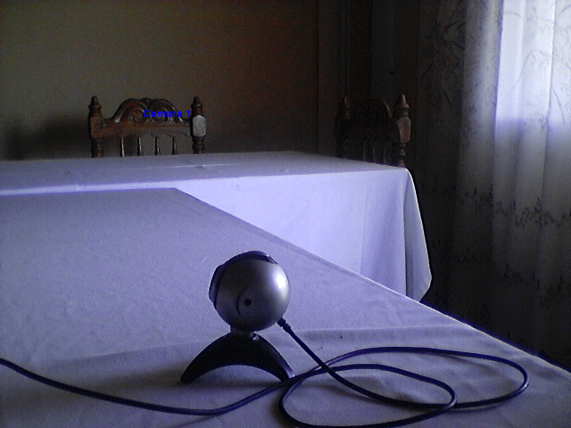
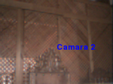

Captura de imágen desde webcam con el framework SimpleCV. Parte 2.
Publicado el dom 08 julio 2012 en Tutorial Python • 1 min de lectura
En el artículo anterior se explica como usar la webcam del equipo para capturar una imágen, en este caso se explicará como definir el tamaño de la imágen, ahora se muestra como manejar 2 webcam al mismo tiempo.
La idea es capturar imágenes de ambas webcam y luego salvarlas en formato png.
El código de la aplicación es la siguiente:
#!/usr/bin/env python
#Importa Camera de SimpleCV
from SimpleCV import Camera
#Se importa sleep de time
from time import sleep
# Se asocia la primera camara con un ancho y alto predefinido.
camara1 = Camera(0,{ "width": 640, "height": 480 })
# Se asocia la segunda camara
camara2 = Camera(1)
# Se captura la imagen de la primera camara y segunda camara
imagen1 = camara1.getImage()
imagen2 = camara2.getImage()
#Se escribe un texto en la primera camara con la posicion dentro de la
#imagen donde va a estar.
imagen1.drawText("Camara 1",160, 120)
#Se escribe un texto en la segunda camara
imagen2.drawText("Camara 2")
#Se muestra ambas imagenes
imagen1.show()
imagen2.show()
#Se salva ambas imagenes
imagen1.save("imagen1.png")
imagen2.save("imagen2.png")
A continuación se muestra las imágenes capturadas por las 2 webcam: Webcam 1:

Webcam 2:

¡Haz tu donativo! Si te gustó el artículo puedes realizar un donativo con Bitcoin (BTC) usando la billetera digital de tu preferencia a la siguiente dirección: 17MtNybhdkA9GV3UNS6BTwPcuhjXoPrSzV
O Escaneando el código QR desde la billetera: